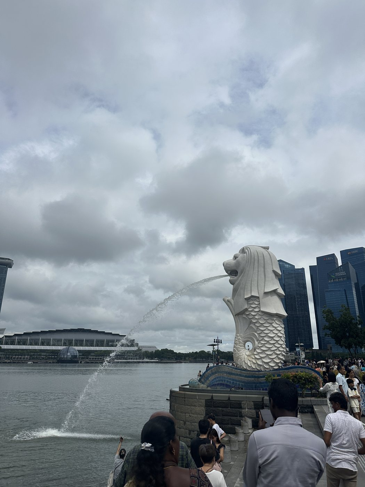
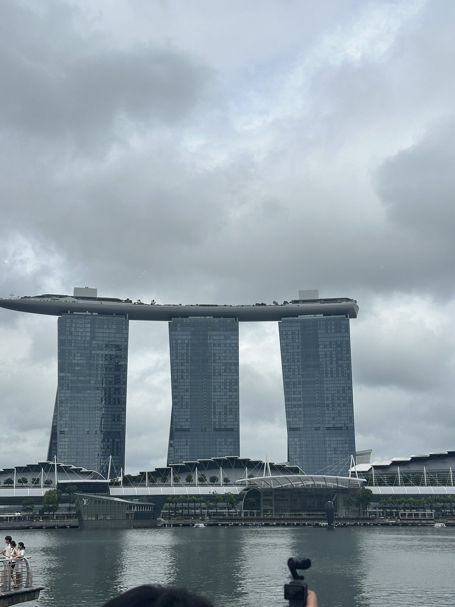
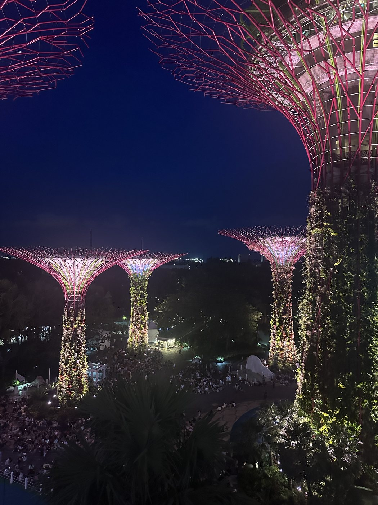
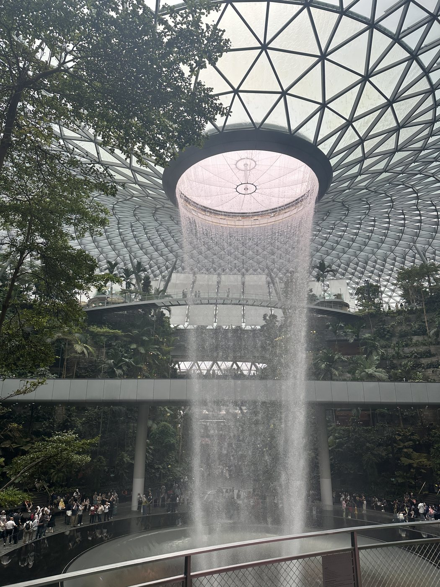
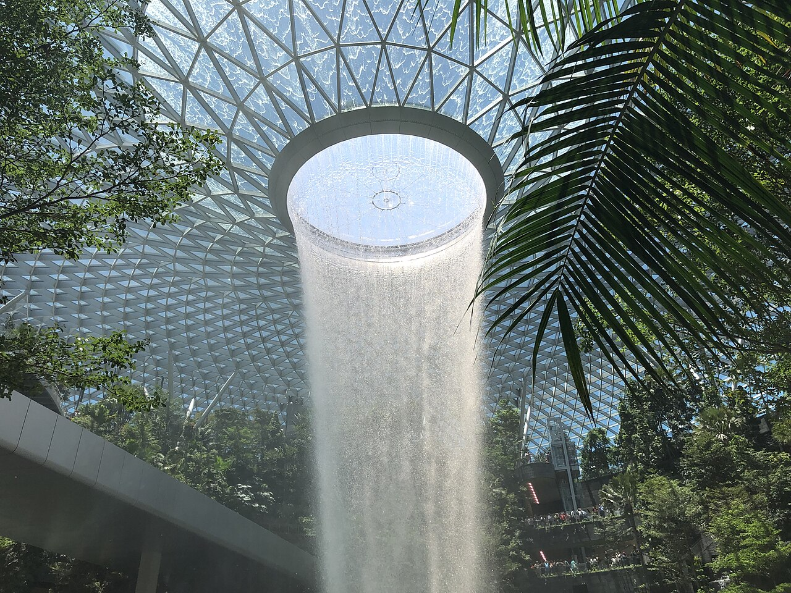

濱海灣・經典的第一張新加坡照片
魚尾獅 Merlion
站在水灣邊看魚尾獅，背後就是金沙和城市天際線。拍照時可以把魚尾獅、金沙和水灣一起入鏡，畫面就能交代你所在的位置。
YoYo 小提醒：不用急著只拍魚尾獅，稍微把鏡頭拉遠一點，水灣和城市一起入鏡會更有感。
新加坡｜濱海灣與日常吃買
魚尾獅、金沙、未來樹，先認識濱海灣的幾個地標。想吃早餐、挑茶或咖啡，或在樟宜轉機，上方都有各自的入口。
領隊 YoYo 的旅遊收藏版 · 版面整理：2026 年 10 月 14 日
先看景點 ↗
我是 YoYo。濱海灣的地標、熟食中心的吃法，和機場轉機，這頁分開整理給你看。
濱海灣的幾個地標常會一起看，但集合位置還是要認清楚。拍魚尾獅時，也可以把金沙和水灣一起帶進鏡頭。
想看地標選景點，找早餐選吃什麼；在樟宜機場轉機，直接看機場轉機分類。
從濱海灣到星耀樟宜，收錄新加坡很有辨識度的城市畫面。
站在水灣邊看魚尾獅，背後就是金沙和城市天際線。拍照時可以把魚尾獅、金沙和水灣一起入鏡，畫面就能交代你所在的位置。
YoYo 小提醒：不用急著只拍魚尾獅，稍微把鏡頭拉遠一點，水灣和城市一起入鏡會更有感。

這棟建築不只是一間飯店，也是很多人腦中第一個浮現的新加坡畫面。白天看起來俐落清楚，天色慢慢暗下來後，整個濱海灣的氣氛又會不太一樣。
YoYo 小提醒：不用特別趕著衝進哪一棟樓，沿著周邊走走看看，就已經很有新加坡的感覺。

金屬結構、植物和燈光放在一起，讓這裡有一種很新加坡的未來感。白天可以看空間感，晚上亮起來後則更像進到另一座城市森林。
YoYo 小提醒：喜歡拍照的人可以慢慢找角度，不用只對著最高的那一棵拍，周圍的光線也很好看。

室內瀑布、玻璃穹頂和商場空間放在一起，讓機場不只是等飛機的地方。走進來時很容易忘記自己其實還在機場裡，適合慢慢感受一下這個很特別的城市空間。
YoYo 小提醒：有機會經過就抬頭看看，這裡很適合替新加坡留下最後一張照片。
🚆 轉機不入境？查看 Skytrain 瀑布攻略 →海南雞飯吃正餐，咖椰吐司吃早餐，想喝香料湯則看叻沙。
咖啡、茶和果乾，先想好是自己喝、自己吃，還是拿來送人。
新加坡樟宜機場｜轉機看星耀樟宜瀑布
在樟宜機場轉機，即使不入境新加坡，也有機會搭乘免費 Skytrain，從車窗欣賞星耀樟宜（Jewel Changi Airport）的雨漩渦瀑布（Rain Vortex）。先確認下一段航班的登機門與截止登機時間，再決定是否前往。

每日 10:00–22:00
新加坡當地時間，與台灣同為 UTC+8。這是瀑布的一般營運時間，並非 Skytrain 班次時間；開放前可能沒有水流。
維護或特殊活動可能調整開放情況，出發前請查看 Jewel 瀑布官方公告 ↗。
適用於已在轉機管制區（Transit Area）、可留在管制區接續航班，且仍有足夠時間的旅客。
路線依據：樟宜機場官方轉機遊 Jewel 指南 ↗。站點與營運安排以現場指標及公告為準。
推薦給時間有限、但仍有足夠轉機餘裕的旅客。
適合符合入境資格，並預留充分往返時間的旅客。
SG Arrival Card 說明依 ICA 官方資訊。完整入境準備請看 新加坡全境注意事項 →。
查證更新：2026 年 10 月 11 日（台北時間）。營運與入境安排請於出發前再次確認。
樟宜機場官網 ↗ 星耀樟宜 Jewel 官網 ↗ 樟宜機場｜航廈轉乘與 Skytrain 最新安排 ↗ Jewel FAQ｜所在區域、Skytrain 不停靠與入內方式 ↗ ICA｜什麼情況屬於轉機旅客 ↗